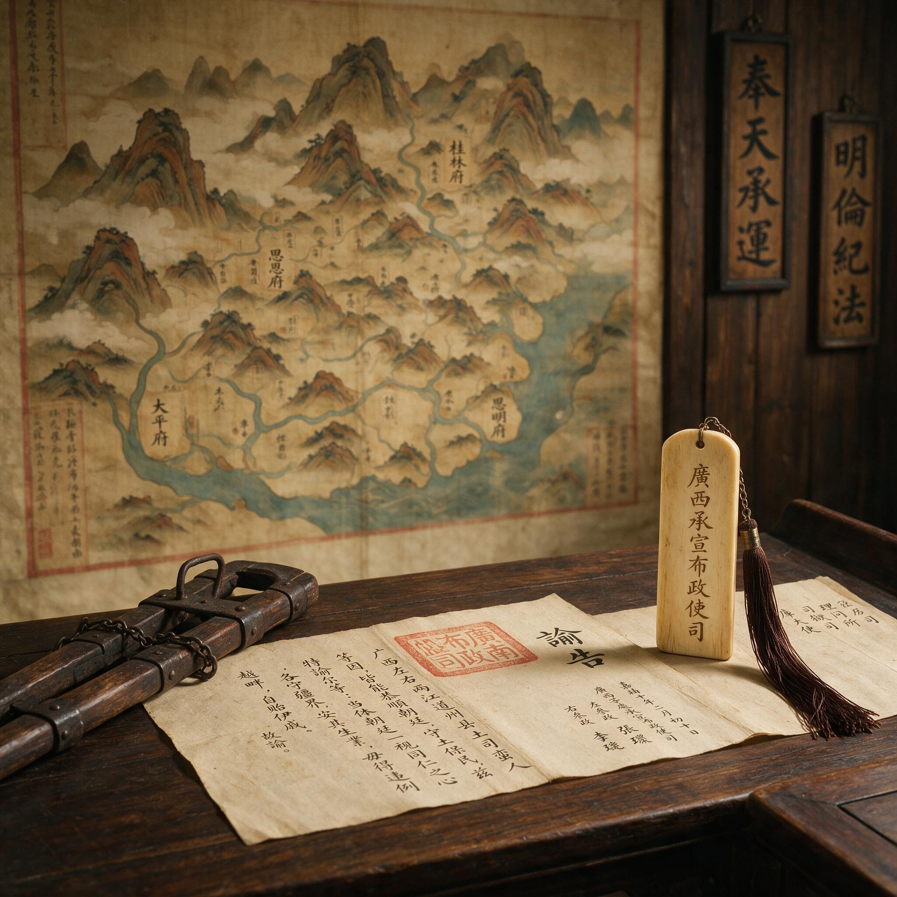

第 23 章
庙堂欲收亦欲毁
“禁其学术。”
这四个字在嘉靖七年末尚未连成一道完整诏命，却已经作为一个罪名，在弹劾者的草拟中反复出现。它起初只与广西用兵的程序争议相依附，后来才逐渐扩大为一个足以覆盖王阳明全部影响的概括。等到它

明代广西巡抚衙门发出安抚土司的政令文书
AI 生成插图，非史实影像。
进入正式行文时，王阳明已经不在人世，不再能为自己写下一句反驳。
另一份文字仍在以帝国的驿递速度北行。那是王守仁从广西发出的奏捷文书。它经过梧州、桂林、湖广，再入江西，最后抵达北京通政司。思恩、田州已经抚定，八寨、断藤峡的武装也被剪除。两个结果被写进同一组文书，一个以招徕收束，一个以进兵解决。帝国南疆的难题，在他手中似乎第一次显出条理。
奏捷文书在京师产生的最初反应是松快。一个长期消耗兵饷、屡易督臣的地区，忽然不再有紧急军情传来，本身就是一种解脱。兵部与户部最先感到压力减轻，广西一路的军费与补给不必再按战时规制追加。
随后才是功赏之议。如何叙功、如何颁赏、是否召见，各衙门循例开始拟议。关于嘉靖帝的批答，史料留下的记载并不完整。
可以确定的是，朝廷一度释放出超乎例常的嘉许。有人传述，皇上对广西一役的措置颇为满意，甚至在内廷与阁臣的对话中提起过召王守仁入阁参赞机务。这种传述没有落到正式诏敕里，却足以令外朝敏锐者察觉：那个在南赣平寇、在南昌擒叛的人，又一次被推到了中枢的门槛前。对一个以文臣领兵、已封伯爵的地方大员而言，这一步若成，意味深远。
然而北京城里的温度并未沿着嘉许的方向继续上升。几乎在入阁传闻悄悄流转的同时，另一批人正在相反的方向用力。桂萼、杨一清等廷臣对王守仁的不满，已经不限于广西一役中的程序问题。他们开始把议论从“事”引向“人”，再从“人”引向“学”。这个过程并不突然，却随着捷报的传播而加快。
桂萼等人的弹劾，焦点最初落在军政程序的专擅上。王守仁到广西后，并未按照朝廷原议中偏重征剿的方略行事，反而大力招抚。招抚之后，又对八寨用兵。批评者认为，这中间存在不俟朝命、以己意定战和的过失。一个地方大员可以用结果为自己辩护，但无法抹去程序上的越轨。
在帝国的官僚体系中，程序本身就是权力。改动既定方略而又不待批复，便是在分享本应由朝廷专有的决策之权。如果弹劾只停留在这一层，朝议还可以被控制在一场关于督臣权限与用兵得失的例行争论里。
但弹劾者没有止步。他们把另一项指控推到台前：王守仁所倡之学，是“伪学”，标新立异，不守圣贤旧训，使天下士子争相附从。这项指控一旦成立，对象就不只是两广总督王守仁，而是那个在江西、浙江、南直隶各有书院与门徒的王阳明。
两项罪名并列的方式，是整场政治攻防的核心。只谈广西用兵，则功过仍可辩争，招抚与进剿的利弊亦非黑白分明。只谈学术，自宋以来便有朱陆之辩，朝廷虽偏重程朱，却也不一定立刻要禁绝另一家言。可当“擅权”与“伪学”被并置，论者等于提出一个更大的判断：王守仁在军政上的自行其是，与他在学问上的别立宗旨，同出一源。那个源便是不受朝廷规训的独立意志。
一个人既能在边陲自行决定安抚与征剿，又能在士林中自树一说、号召四方，便是在帝国的制度化权威之外，形成了另一种可以自行运转的权威。这种判断对嘉靖帝并非没有效力。嘉靖朝的政治气氛本就敏感于臣下的专擅，尤其是那些拥有地方人望与实际动员能力的大臣。桂萼等人正是抓住了这一点。他们不需要直接证明王阳明有异心，只需要指出一个事实：在广西，王阳明以极短时间调动土汉官兵、安抚数万之众；在江西，他所留下的门生故吏仍然主导着书院与讲会。这种事实在太平盛世里，足够令一个多疑的皇帝感到不安。
王阳明在广西的治理，确实建立在他个人在场的基础之上。他每到一地，以告谕劝民、以讲学化俗，短期内可以改变地方秩序。士官归附，瑶汉相安，新设学校开始教读儒书。可这些措置大多离不开他本人对时势的判断、对土官心理的把握，以及他与地方吏民之间临时建立起来的信任。一旦他离开，制度能否延续，本身就是一个未解之问。
这一点，在前方尚未显形，在京师却已被他的政敌转译成另一种语言：不是能力不足，而是影响过度。所谓影响过度，在朝议中的对应物，是那套由心学维系的地方网络。江西、浙江、南直隶等地的书院会讲，并非全部由王阳明亲自主持，却以他的名义和教法组织起来。门人中有人出任地方官，把乡约、保甲、社学与讲学相结合；有人回到乡里，聚徒讲论，刊刻语录。一个士子从进入书院、接受“致良知”的教导，到参加会讲、被纳入同门网络，其认同不必经过朝廷。这种认同甚至可能越过科举与任官的路径，直接与地方治理、赈灾、教化发生关系。对中央而言，这已经不是纯粹的学术活动。
朝廷可以容忍一个学者有门徒，却很难容忍一个封疆大吏的门徒遍布州县，而这些门徒不仅彼此声气相通，还会在乡约、保甲、社学等事务中相互协作。一个地方官推行乡约，可能请来数百里外的同门共议条规；一个士子在家乡设立义仓，也能得到邻近州县王门弟子的资助。这种跨府县的协作，使心学网络具有了某种独立于官方行政之外的凝聚力。
朝廷可以容忍一个学派在书斋中讲论，却很难容忍这样一套认同被带进地方行政的细节，变成可以调动人力、评判是非的民间准则。北京城里，弹劾者的语言正沿着这个方向收紧。他们不再只说王守仁在广西“专擅”，而是更进一步，说他以“致良知”之说教人自是其是，不复以朝廷教化为准。
这个说法击中了一个要害：如果每个人都可以凭借内心良知判断是非，那么官方的经义、学校的训导、甚至皇帝的诏令，还能保有多少排他权威？在弹章的逻辑中，这不只是一个哲学问题，而是一个统治问题。嘉靖帝不可能完全理解阳明学的义理，但他能听懂这里面的权力含义。他长年在议礼、党争与阁臣倾轧中度过，对任何可能削弱皇权独尊的思想都保持警惕。当桂萼等人将王守仁的军事自主与学术独立并为一谈时，皇帝已经不再把广西之捷看作单纯的功业，而开始把它视为一个臣下以个人能力与威望建立独立影响的例证。召还之议从此冷却，入阁的传闻也像从未出现过一样，消散在宫墙内外。
那一边，王守仁还在一段日渐衰竭的路途上等候朝廷的明旨。他上过乞散归养之疏，也上过谢恩之疏，字句之间没有争辩，只说自己病势日深，思乡愈切。可是北京没有任何回响。没有召还，没有赐归，没有训斥，也没有追问。这种沉默比弹劾更令人难熬。
他知道朝中有人议论，也能从友人的书信中读到零星的警讯。但他已经无力也不愿再去经营那些关系。从广西到江西，关山重叠，湿热蒸郁。王守仁乘舟时多，起陆时少，每过一程就要歇息半日。
随行门人把药汤送到枕边，他有时能饮，有时只摇头。即便如此，遇到地方官与门生求见，他仍坚持整衣相见，不愿让人看出自己已经衰惫到了极点。有人说他步履尚健，也有人说他须发尽白，形神大减。此时的他，早已不是南赣练兵时那个可以连日骑马、夜宿山寨的提督军务，而是一个被暑热、咳嗽与痢疾反复折磨的老人。
行至南安府地面，衰象已经遮掩不住。随行之人找到青龙铺一处近水的小筑，把他抬进去安歇。附近的医师来看了，把过脉后只是摇头，不敢下重药。
王守仁靠在榻上，有时阖眼，有时低声问起浙江家中的旧事。门人想听他说些身后安排，他却始终没有把话题引向仕途得失或朝廷评骘。他更关心的是，眼前这些弟子今后如何继续为学，如何不让“致良知”三字变成空谈。
嘉靖八年的春天还没有完全到来，王守仁便在青龙铺的那间旅次中停止了呼吸。根据后来门人的记述，临终前的言语并不多。有的记载说他曾嘱咐众人“勿哭”，也有的记载说他只是以目示意，面色平静，终于闭目而逝。原始记录对最后几句话的说法并不统一，因此很难断定哪一句才是真正的遗言。可以确定的是，他没有留下关于恤典、谥号或朝廷是非的交代，也没有再对广西之事作一字辩解。他把最后的关切，全部留给了学问与门人。
死讯北传的过程，比奏捷文书更慢。地方官按例呈报，途中又值天色多变，文书迟滞数日才进入北京通政司。当消息终于传到时，朝廷上的人已经习惯了对王守仁的攻讦。一个已死之人，本可以不再成为话题。但桂萼等人没有停下脚步。
他们迅速把争论从“是否追论其罪”推进到“是否给予恤典”。没有恤典，就没有赐祭、赠官、谥号，也就意味着朝廷不承认他身后的一切名位。这个结果，对王门弟子的打击远胜于对死者本人的评价。
对于桂萼来说，死讯非但不是收手的理由，反而是一个彻底了结的机会。若王守仁还活着，追论太急，可能激起士林反弹，甚至迫使皇帝出面调停。现在人已不在，再用“专擅用兵”“伪学惑众”两条罪名请削恤典，就显得干脆利落。杨一清等人也在阁中配合，使这项动议很快成形。朝廷的诏命虽然措辞有异，但主旨一致：王守仁在广西不遵原议，擅作主张；其讲学背离程朱正传，虚高自大，不宜褒恤，所至书院并加禁约。
这道诏命传到江西、浙江时，王阳明的灵柩尚未抵达浙江。当地的官署将诏令转抄、张挂，书院中那些准备公开迎灵的弟子不得不改成低调行事。他们不能聚众设祭，不能刊刻纪念文字，不能在官道旁建立牌位。一些原本要赶来送葬的地方官，也在接到邸报后改变了主意，只遣家仆送上一份赙仪，本人不再露面。
禁令没有立刻拆掉书院，也没有把所有门人抓起来，但它制造出一种全社会的自保氛围。每个人都开始计算：与“伪学”站在一起，会付出怎样的代价。
但有趣的是，禁令的传播本身也产生了另一种效果。它让许多原本只是听说过王阳明的人，忽然对他的学问产生了好奇。越是被朝廷定为“异端”，越有人想弄清他在说什么。一些年轻士子私下抄录《传习录》，在朋友之间传看；一些乡塾的教师把王阳明的话与朱熹之书对照讲授，反使学生对“良知”二字印象深刻。朝廷要禁的是传播，却在传播中放大了它的名声。
这当然不是桂萼等人愿意看到的。他们也许认为，只要朝廷不承认、不立祠、不赐谥，人们就会渐渐忘记。但心学此刻已经积累起了相当的社会基础。书院并非都建在城里，很多设在县城之外的山林之间；会讲也不都需要官方许可，三五同门相聚问答，便可成一讲。禁令可以关闭几所知名书院，却无法查禁所有私人燕坐。
更不用说，那些已经进入乡规民约的训词，本就不是写在“王学”名目之下，而是写进“劝善”“明伦”“和睦乡里”等普通条目里，官府很难连这些也一并禁止。
王阳明的灵柩继续北归。过江西时，有门人拦住送行，泪下不能言。王阳明的夫人与嗣子等家眷也从浙江赶来迎候，扶柩入浙。
由于朝廷恤典已削，丧礼只能以私家之礼仪举行。没有官府的祭文，没有钦赐的谥号，也没有京师派来的护丧官。门人弟子依照乡礼，在灵前奠酒、行拜、守夜。那些从远方赶来的同门，彼此低声叙说从学经过，像在确认一个共同的来处。
这番静默的归葬，与北京城中仍在这个人名上反复较量的朝议形成极尖锐的反差。一边是孤舟冷驿中的棺木，一边是案牍堆叠间的弹章。死者的遗体已经不能再来回应，但他的名字仍在帝国权力场中不断被提起、被评价、被使用。朝廷每一次重申“伪学”的罪名，都等于承认这个人的影响还在，需要再用政治手段压下去。越压，越说明压不住。这种张力，正是心学制度化进程遭遇的转折。
原先，王门弟子还抱有希望，认为可以通过修成事功、立下政绩来获得朝廷的接纳。书院讲学虽然已具规模，但大体仍愿与官方教化并行不想公然对抗。
嘉靖八年的禁学之诏，把所有中间地带扫除了。它逼着每个王门弟子面对一个选择：要么承认朝廷的判断，放弃师说；要么把师说从合法空间带出去，转移到更私人、更乡野、更不依赖官方认可的传播方式中。这个选择不是哪一个人作出的，而是在诏令、邸报、亲友相告和地方官府的冷眼中逐渐形成的。
有一部分人转向了沉默。他们继续做官，在公文中不再提“心学”二字，甚至连与同门往来都尽量避开耳目。
但更多的人开始往相反方向走。他们意识到，既然书院会讲已经处于禁令之下，不如把讲论变成更轻、更小、更不起眼的日常形式：家塾中的问答，灶头边的劝善，田埂上的歌谣，丧葬嫁娶中的告语。这些形式本就不需要挂牌，不需要呈报，也不在地方官的考成簿上。朝廷的诏令写得再严厉，也很难追到每一个村子、每一座家庙。
王门弟子中有人记下这样一类训言：不讲“心即理”，只说“良心不能昧”；不谈“致良知”，只说“做人不要欺心”。这类话说给农人听，农人能懂；说给妇人听，妇人能点头；说给童子听，童子能记得。
它们不出现“王阳明”三个字，也不再争论程朱陆王，只把心学最粗浅的那一层日用道理剥出来，化入寻常言语。朝廷可以禁一门学问，却很难禁掉“不能没良心”这样的日常判断。而这正是“致良知”最深的渗透。
这一年，北京仍在为是否恢复王守仁恤典而争论不休。有的大臣说，王守仁平定宸濠之功，不可因其后事而尽没；有的大臣说，若复其恤典，恐伤朝廷禁学之令。两种意见相持不下，皇帝亦未再作更动。
于是王阳明的身后之名，便这样悬在半空：不上不下，不荣不辱，像一块被反复称量的石头，始终没有落到该落的地方。然而，石头越是被称量，它的重量越为人知。那些在灵前默拜过的门人，散归各自州县后，并未停止教授。
嘉靖七年十月，王守仁在南宁具疏上奏广西善后事宜时，北京的天气已经转冷。他的奏捷文书在通政司挂号后，循例先送内阁阅看，再呈御前。桂萼当时以吏部尚书兼武英殿大学士入阁办事，杨一清以首辅身份主持阁务。
两人对广西军务的态度本不一致：杨一清老于边事，对地方督抚的临机处置尚能持中权衡；桂萼则自议礼以来便以“奉旨厘正”自任，对任何不按朝廷原议行事的臣僚都心怀警惕。王守仁的奏捷文书恰恰在这一点上触动了桂萼最敏感的神经。
原议是征剿思田，王守仁却以招抚收功；原议未及八寨，王守仁却自行调兵进剿。从军事结果看，两处都已平定；从程序看，两处都偏离了廷议所定的方略。
桂萼在阁中阅过文书后，曾对同僚说：“守仁此举，是以一己之智略代庙堂之成算。”这句话很快传到了外朝，成为弹劾者反复引述的基调。
与此同时，嘉靖帝的批答却走了另一条路。御笔在奏捷文书上的朱批，据后来流传的片段，有“处置得宜”“劳绩可嘉”等语，语气之温和，超出许多廷臣的预料。更引人注目的是，皇帝在批答末尾加了一句，大意是令兵部议拟功赏，并“俟地方事宁，另行召用”。
这句“另行召用”在当时的语境中含义丰富：王守仁已是南京兵部尚书、新建伯，若再召用，便只能是入阁或掌部事。内廷随侍的太监曾向外朝透露，皇上在某次与阁臣的闲谈中，确曾说过“王守仁可大用”之类的话。这些话虽然没有形成书面谕旨，却足以让朝中那些与王门弟子有往来的官员感到振奋。
一时间，江西、浙江的书院中甚至有人开始私下议论，阳明先生一旦入阁，心学或许可以像程朱之学那样获得朝廷的正式认可。
但桂萼等人不会让这种可能变成现实。他们深知，一旦王守仁入阁，不仅意味着一个与他们政见不合的封疆大吏进入权力核心，更意味着一种不受他们控制的学术力量将在中枢获得合法地位。
桂萼本人对心学并无深入研读，但他从江西、浙江等地官员的奏报中，已经大致了解王门弟子在地方上的活动规模。他知道吉安、南昌、绍兴等地有书院讲会，知道《传习录》在士子中流传甚广，知道不少府县官员以“致良知”为施政箴言。这些信息在他脑中拼合出来的图景，不是一个学者在书斋中著书立说，而是一个拥有广泛社会动员能力的政治派系正在形成。
他将这些忧虑写入弹章时，措辞经过了精心设计。他没有直接指控王守仁结党，而是将“擅离职守”与“伪学惑众”并列为两条罪名，让它们在逻辑上互相支撑：因为其学不以朝廷为准，故其行事敢于自专；因为其行事敢于自专，故其学之害不止于学术。
这道弹章的具体条文，据后来王门弟子在编纂《王文成公全书》时引述的部分内容，大致包括以下几层意思：其一，王守仁奉命提督两广军务，原议以征剿思恩、田州为主，而守仁至广西后，擅自改以招抚，不俟朝命而行，是谓“专擅军机”；其二，招抚之后，又未经奏准，自行调集土汉官兵进剿八寨、断藤峡，虽云有功，而“事涉专辄”，开了一个不好的先例；其三，王守仁所倡“致良知”之说，不遵朱子《集注》，别立宗旨，“使天下之士不复以圣贤经传为依归”，是谓“伪学”；其四，其门人弟子遍布江西、浙江、南直隶等地，聚徒讲学，私立门户，“渐成党与之势”。
这四条中，前两条说的是广西用兵的程序问题，后两条说的是学术与组织问题。桂萼将它们放在同一道弹章里，等于向皇帝传递一个清晰的信号：王守仁的问题不是孤立的，而是从军事到学术、从个人到群体的一贯模式。
杨一清在这件事上的态度比桂萼更为复杂。他早年曾举荐过王守仁，对其军事才能有切实的了解。正德年间王守仁巡抚南赣时，杨一清正在总制陕西三边军务，两人虽未共事，但杨一清对南赣平寇的艰难有切身体会，因此对王守仁的用兵能力一直抱有敬意。
然而到了嘉靖朝，杨一清已年过七旬，几度起落，深知在世宗皇帝面前保持地位的不易。他不像桂萼那样对心学有强烈的排斥，但他也看到了王门弟子在地方上日益扩大的影响力。作为一个老练的政治家，他更担心的是这种影响力可能引发的连锁反应：如果每个封疆大吏都像王守仁那样，在地方上建立自己的学术网络和人脉体系，朝廷对地方的控制力就会从内部被削弱。
因此，当桂萼将弹章送入内阁会签时，杨一清没有反对。他也许在措辞上做过一些缓和，但总体上认可了弹章的方向。
弹章送入内廷后，嘉靖帝的态度开始发生微妙的变化。他不再提起“另行召用”的话，对广西捷报的热情也逐渐冷却。这中间发生了什么，外朝无从确知。
但可以推测的是，桂萼等人的弹章让皇帝意识到一个问题：王守仁在广西的成功，固然解决了南疆的燃眉之急，但这种成功的方式——以个人判断代替朝廷成议、以个人威望整合地方力量——本身就包含着对中央权威的潜在挑战。对于一个以“议礼”起家、对臣下结党极度敏感的皇帝来说，这种挑战即使没有实际发生，仅仅作为一种可能性存在，就已经足够令他警惕。
于是，召还之议被搁置，入阁的传闻也从此消失。皇帝没有再对王守仁的奏疏作任何批答，既不说留，也不说放，只是沉默。
这种沉默对远在广西的王守仁来说，是一种难以承受的悬置。他上过乞归养病的奏疏，详细陈述了自己咳嗽不止、饮食日减的状况，请求朝廷准其回籍调理。奏疏发出后，他一面处理善后事务，一面等待批复。南宁的冬天虽然不冷，但他的身体已经经不起任何折腾。
随行的门人周积、王大用等人日夜轮流看护，煎药、进粥、记录脉象。他们看到的是一个迅速衰老的人：原本清癯的面容变得更加瘦削，眼窝深陷，说话的声音也日渐微弱。即便如此，王守仁仍然坚持每日接见前来请教的士官与生员，为他们讲解“知行合一”的要义。
有一次，一个土官问他：“先生既说知行合一，为何世间多有知而不行之人？”王守仁靠在椅背上，沉默了片刻，答道：“知而不行，只是未知。”这句话后来被门人记录下来，成为《传习录》中的一条重要语录。但当时在场的人注意到，他说完这句话后，额上已经渗出一层虚汗。
到了十二月，朝廷仍然没有任何回音。王守仁决定不再等待。他将两广军务交代给广东布政使王大用等人，自己带着数名随从和门人，从南宁启程北归。启程那日，南宁的士民闻讯赶来送行，从城门一直排到江边。有人跪在道旁叩头，有人捧着酒食拦在车前，有人只是默默站着流泪。王守仁强撑着身体，一一拱手还礼。船离开南宁后，沿郁江而下，经浔州、梧州，入西江，再转北江，过韶州、南雄，进入江西地面。这一路的水程，在平时已属劳顿，对于一个病人而言更是煎熬。船上空间狭小，湿气重，夜风从舱缝中灌进来，冷得刺骨。王守仁的咳嗽越来越频繁，有时整夜不能安枕。
他们把书院换成了家塾，把会讲换成了小聚，把刻书换成抄本，把公开的“王学”改作口头上的“阳明先生”。这种变化并不是立刻发生的，而是在禁学的压力下被一点点逼出来。
等京师的大臣们隔年再想起要查禁时，心学已经不再是几处书院能够框得住的了。嘉靖八年的诏令，原本是要终结王阳明的影响。结果，它只是终结了王门弟子对朝廷认可的幻想。从那一刻起，心学不再把希望寄托在入阁、赐谥、从祀这些庙堂礼遇上，也不再试图把自己包装成官僚体制内的正统。它开始明白，自己的根不在北京，而在每一个甘愿在乡土社会中默默讲论“良知”的人身上。这种明白，对于一个学派来说，比任何功名都更具生命力。
灵柩最终落葬于浙江。没有官方送葬的仪仗，没有大学士的祭文，也没有皇帝钦赐的碑额。墓前站着的，是穿着素服的家人，和一批从各地赶来的门生。他们行过礼，默立了很久。没有人高声说话，也没有人哭号，只有山风穿过松林。不远处，官道上偶尔有驿马驰过，把新一期的邸报送往县衙。
邸报里或许还写着“王学伪妄”之类的字样，但那些字句已经到不了这片安静的山坡。死者已入土，活人却把一个官府无法接收的信念，从此带回了各自的房檐与土地。这就是嘉靖八年留下的局面：一个有功于国的人，丧礼中没有朝廷的恤典；一个被官方禁令追剿的学派，却在乡野间找到了更隐蔽的容身之处。庙堂欲收其能，却不能不毁其说；欲毁其说，却反而使那说从功名的光亮中退出，走进更深厚的人间土层。收与毁之间，心学已经不再只是王阳明一个人的证道。它变成了许多人必须各自回答的问题：当朝廷说你是伪学时，你还能不能在自己的良知里站得起来。